MATLAB is an ideal tool for running simulations that incorporate random inputs or noise. The Statistics Toolbox provides functions to create sequences of random data according to many common univariate distributions. The Toolbox also includes a few functions to generate random data from multivariate distributions, such as the multivariate normal and multivariate t. However, there is no built-in way to generate data from multivariate distributions that have complicated relationships among the variables, or where the individual variables are from different distributions.
Recently, copulas have become popular in simulation models. Copulas are functions that describe dependencies among variables, and provide a way to create distributions to model correlated multivariate data. Using a copula, a data analyst can construct a multivariate distribution by specifying marginal univariate distributions, and choosing a particular copula to provide a correlation structure between variables. Bivariate distributions, as well as distributions in higher dimensions, are possible. In this demo, we discuss how to use copulas to generate dependent multivariate random data in MATLAB, using the Statistics Toolbox.
One of the design decisions for a Monte-Carlo simulation is a choice of probability distributions for the random inputs. Selecting a distribution for each individual variable is often straightforward, but deciding what dependencies should exist between the inputs may not be. Ideally, input data to a simulation should reflect what is known about dependence among the real quantities being modelled. However, there may be little or no information on which to base any dependence in the simulation, and in such cases, it is a good idea to experiment with different possibilities, in order to determine the model's sensitivity.
However, it can be difficult to actually generate random inputs with dependence when they have distributions that are not from a standard multivariate distribution. Further, some of the standard multivariate distributions can model only very limited types of dependence. It's always possible to make the inputs independent, and while that is a simple choice, it's not always sensible and can lead to the wrong conclusions.
For example, a Monte-Carlo simulation of financial risk might have random inputs that represent different sources of insurance losses. These inputs might be modeled as lognormal random variables. A reasonable question to ask is how dependence between these two inputs affects the results of the simulation. Indeed, it might be known from real data that the same random conditions affect both sources, and ignoring that in the simulation could lead to the wrong conclusions.
Simulation of independent lognormal random variables is trivial. The simplest way would be to use the LOGNRND function. Here, we'll use the MVNRND function to generate n pairs of independent normal random variables, and then exponentiate them. Notice that the covariance matrix used here is diagonal, i.e., independence between the columns of Z.
n = 1000; sigma = .5; SigmaInd = sigma.^2 .* [1 0; 0 1]
SigmaInd =
0.2500 0
0 0.2500
ZInd = mvnrnd([0 0], SigmaInd, n); XInd = exp(ZInd); plot(XInd(:,1),XInd(:,2),'.'); axis equal; axis([0 5 0 5]);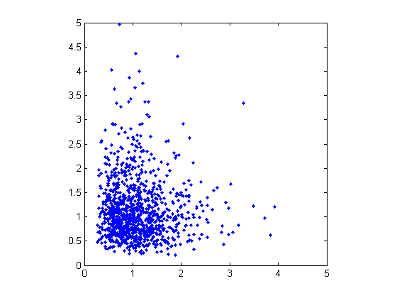
Dependent bivariate lognormal r.v.'s are also easy to generate, using a covariance matrix with non-zero off-diagonal terms.
rho = .7; SigmaDep = sigma.^2 .* [1 rho; rho 1]
SigmaDep =
0.2500 0.1750
0.1750 0.2500
ZDep = mvnrnd([0 0], SigmaDep, n); XDep = exp(ZDep);
A second scatter plot demonstrates the difference between these two bivariate distributions.
plot(XDep(:,1),XDep(:,2),'.'); axis equal; axis([0 5 0 5]);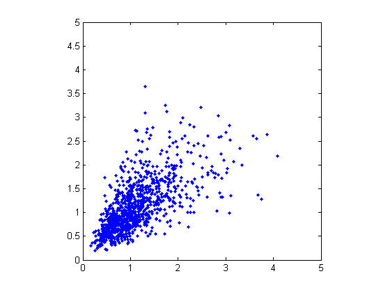
It's clear that there is more of a tendency in the second dataset for large values of X1 to be associated with large values of X2, and similarly for small values. This dependence is determined by the correlation parameter, rho, of the underlying bivariate normal. The conclusions drawn from the simulation could well depend on whether or not X1 and X2 were generated with dependence or not.
The bivariate lognormal distribution is a simple solution in the case, and of course easily generalizes to higher dimensions and cases where the marginal distributions are _different_ lognormals. Other multivariate distributions also exist, for example, the multivariate t and the Dirichlet distributions are used to simulate dependent t and beta random variables, respectively. But the list of simple multivariate distributions is not long, and they only apply in cases where the marginals are all in the same family (or even the exact same distributions). This can be a a real limitation in many situations.
Although the above construction that creates a bivariate lognormal is simple, it serves to illustrate a method which is more generally applicable. First, we generate pairs of values from a bivariate normal distribution. There is statistical dependence between these two variables, and each has a normal marginal distribution. Next, a transformation (the exponential function) is applied separately to each variable, changing the marginal distributions into lognormals. The transformed variables still have a statistical dependence.
If a suitable transformation could be found, this method could be generalized to create dependent bivariate random vectors with other marginal distributions. In fact, a general method of constructing such a transformation does exist, although not as simple as just exponentiation.
By definition, applying the normal CDF (denoted here by PHI) to a standard normal random variable results in a r.v. that is uniform on the interval [0, 1]. To see this, if Z has a standard normal distribution, then the CDF of U = PHI(Z) is
Pr{U <= u} = Pr{PHI(Z) <= u} = Pr{Z <= PHI^(-1)(u)} = u,and that is the CDF of a U(0,1) r.v. Histograms of some simulated normal and transformed values demonstrate that fact.
n = 1000; z = normrnd(0,1,n,1); hist(z,-3.75:.5:3.75); xlim([-4 4]); title('1000 Simulated N(0,1) Random Values'); xlabel('z'); ylabel('Frequency');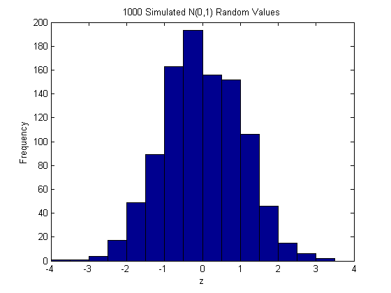
u = normcdf(z); hist(u,.05:.1:.95); title('1000 Simulated N(0,1) Values Transformed to U(0,1)'); xlabel('u'); ylabel('Frequency');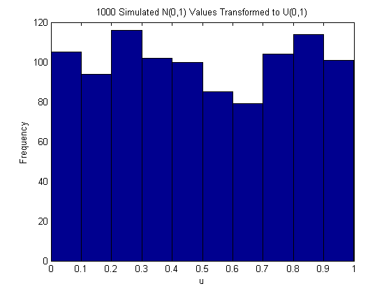
Now, borrowing from the theory of univariate random number generation, applying the inverse CDF of any distribution F to a U(0,1) random variable results in a r.v. whose distribution is exactly F. This is known as the Inversion Method. The proof is essentially the opposite of the above proof for the forward case. Another histogram illustrates the transformation to a gamma distribution.
x = gaminv(u,2,1); hist(x,.25:.5:9.75); title('1000 Simulated N(0,1) Values Transformed to Gamma(2,1)'); xlabel('x'); ylabel('Frequency');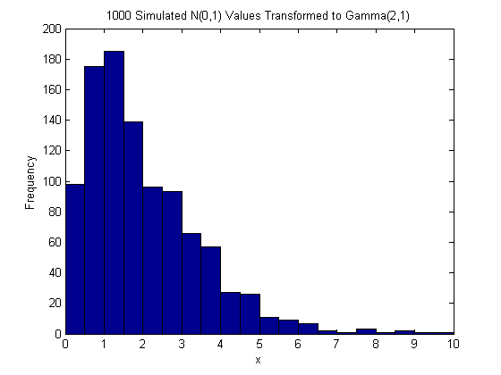
This two-step transformation can be applied to each variable of a standard bivariate normal, creating dependent r.v.'s with arbitrary marginal distributions. Because the transformation works on each component separately, the two resulting r.v.'s need not even have the same marginal distributions. The transformation is defined as
Z = [Z1 Z2] ~ N([0 0],[1 rho; rho 1]) U = [PHI(Z1) PHI(Z2)] X = [G1(U1) G2(U2)]
where G1 and G2 are inverse CDFs of two possibly different distributions. For example, we can generate random vectors from a bivariate distribution with t(5) and Gamma(2,1) marginals.
n = 1000; rho = .7; Z = mvnrnd([0 0], [1 rho; rho 1], n); U = normcdf(Z); X = [gaminv(U(:,1),2,1) tinv(U(:,2),5)];
This plot has histograms alongside a scatter plot to show both the marginal distributions, and the dependence.
[n1,ctr1] = hist(X(:,1),20); [n2,ctr2] = hist(X(:,2),20); subplot(2,2,2); plot(X(:,1),X(:,2),'.'); axis([0 12 -8 8]); h1 = gca; title('1000 Simulated Dependent t and Gamma Values'); xlabel('X1 ~ Gamma(2,1)'); ylabel('X2 ~ t(5)'); subplot(2,2,4); bar(ctr1,-n1,1); axis([0 12 -max(n1)*1.1 0]); axis('off'); h2 = gca; subplot(2,2,1); barh(ctr2,-n2,1); axis([-max(n2)*1.1 0 -8 8]); axis('off'); h3 = gca; set(h1,'Position',[0.35 0.35 0.55 0.55]); set(h2,'Position',[.35 .1 .55 .15]); set(h3,'Position',[.1 .35 .15 .55]); colormap([.8 .8 1]);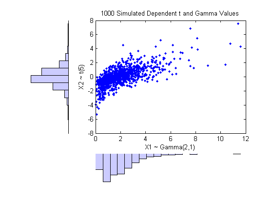
Dependence between X1 and X2 in this construction is determined by the correlation parameter, rho, of the underlying bivariate normal. However, it is _not_ true that the linear correlation of X1 and X2 is rho. For example, in the original lognormal case, there is a closed form for that correlation:
cor(X1,X2) = (exp(rho.*sigma.^2) - 1) ./ (exp(sigma.^2) - 1)
which is strictly less than rho unless rho is exactly one. In more general cases, though, such as the Gamma/t construction above, the linear correlation between X1 and X2 is difficult or impossible to express in terms of rho, but simulations can be used to show that the same effect happens.
That's because the linear correlation coefficient expresses the _linear_ dependence between r.v.'s, and when nonlinear transformations are applied to those r.v.'s, linear correlation is not preserved. Instead, a rank correlation coefficient, such as Kendall's tau or Spearman's rho, is more appropriate.
Roughly speaking, these rank correlations measure the degree to which large or small values of one r.v. associate with large or small values of another. However, unlike the linear correlation coefficient, they measure the association only in terms of ranks. As a consequence, the rank correlation is preserved under any monotonic transformation. In particular, the transformation method just described preserves the rank correlation. Therefore, knowing the rank correlation of the bivariate normal Z exactly determines the rank correlation of the final transformed r.v.'s X. While rho is still needed to parameterize the underlying bivariate normal, Kendall's tau or Spearman's rho are more useful in describing the dependence between r.v.'s, because they are invariant to the choice of marginal distribution.
It turns out that for the bivariate normal, there is a simple 1-1 mapping between Kendall's tau or Spearman's rho, and the linear correlation coefficient rho:
tau = (2/pi)*arcsin(rho) or rho = sin(tau*pi/2) rho_s = (6/pi)*arcsin(rho/2) or rho = 2*sin(rho_s*pi/6)
subplot(1,1,1); rho = -1:.01:1; tau = 2.*asin(rho)./pi; rho_s = 6.*asin(rho./2)./pi; plot(rho,tau,'-', rho,rho_s,'-', [-1 1],[-1 1],'k:'); axis([-1 1 -1 1]); xlabel('rho'); ylabel('Rank correlation coefficient'); legend('Kendall''s tau', 'Spearman''s rho_s', 'location','northwest');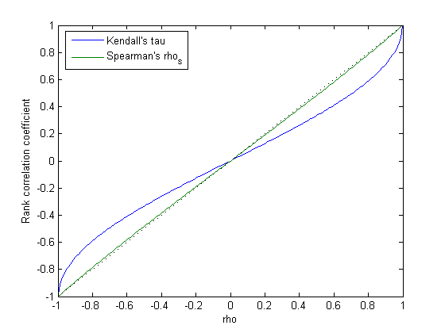
Thus, it's easy to create the desired rank correlation between X1 and X2, regardless of their marginal distributions, by choosing the correct rho parameter value for the linear correlation between Z1 and Z2.
Notice that for the multivariate normal distribution, Spearman's rank correlationis almost identical to the linear correlation. However, this is not true once we transform to the final random variables.
The first step of the construction described above defines what is known as a copula, specifically, a Gaussian copula. A bivariate copula is simply a probability distribution on two random variables, each of whose marginal distributions is uniform. These two variables may be completely independent, deterministically related (e.g., U2 = U1), or anything in between. The family of bivariate Gaussian copulas is parameterized by Rho = [1 rho; rho 1], the linear correlation matrix. U1 and U2 approach linear dependence as rho approaches +/- 1, and approach complete independence as rho approaches zero.
Scatter plots of some simulated random values for various levels of rho illustrate the range of different possibilities for Gaussian copulas:
n = 500; Z = mvnrnd([0 0], [1 .8; .8 1], n); U = normcdf(Z,0,1); subplot(2,2,1); plot(U(:,1),U(:,2),'.'); title('rho = 0.8'); xlabel('U1'); ylabel('U2'); Z = mvnrnd([0 0], [1 .1; .1 1], n); U = normcdf(Z,0,1); subplot(2,2,2); plot(U(:,1),U(:,2),'.'); title('rho = 0.1'); xlabel('U1'); ylabel('U2'); Z = mvnrnd([0 0], [1 -.1; -.1 1], n); U = normcdf(Z,0,1); subplot(2,2,3); plot(U(:,1),U(:,2),'.'); title('rho = -0.1'); xlabel('U1'); ylabel('U2'); Z = mvnrnd([0 0], [1 -.8; -.8 1], n); U = normcdf(Z,0,1); subplot(2,2,4); plot(U(:,1),U(:,2),'.'); title('rho = -0.8'); xlabel('U1'); ylabel('U2');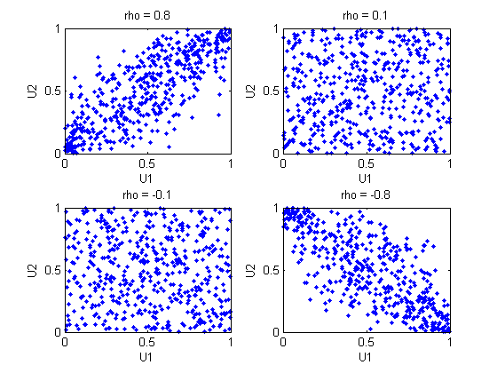
The dependence between U1 and U2 is completely separate from the marginal distributions of X1 = G(U1) and X2 = G(U2). X1 and X2 can be given _any_ marginal distributions, and and still have the same rank correlation. This is one of the main appeals of copulas -- they allow this separate specification of dependence and marginal distribution.
A different family of copulas can be constructed by starting from a bivariate t distribution, and transforming using the corresponding t CDF. The bivariate t distribution is parameterized with Rho, the linear correlation matrix, and nu, the degrees of freedom. Thus, for example, we can speak of a t(1) or a t(5) copula, based on the multivariate t with one and five degrees of freedom, respectively.
Scatter plots of some simulated random values for various levels of rho illustrate the range of different possibilities for t(1) copulas:
n = 500; nu = 1; T = mvtrnd([1 .8; .8 1], nu, n); U = tcdf(T,nu); subplot(2,2,1); plot(U(:,1),U(:,2),'.'); title('rho = 0.8'); xlabel('U1'); ylabel('U2'); T = mvtrnd([1 .1; .1 1], nu, n); U = tcdf(T,nu); subplot(2,2,2); plot(U(:,1),U(:,2),'.'); title('rho = 0.1'); xlabel('U1'); ylabel('U2'); T = mvtrnd([1 -.1; -.1 1], nu, n); U = tcdf(T,nu); subplot(2,2,3); plot(U(:,1),U(:,2),'.'); title('rho = -0.1'); xlabel('U1'); ylabel('U2'); T = mvtrnd([1 -.8; -.8 1], nu, n); U = tcdf(T,nu); subplot(2,2,4); plot(U(:,1),U(:,2),'.'); title('rho = -0.8'); xlabel('U1'); ylabel('U2');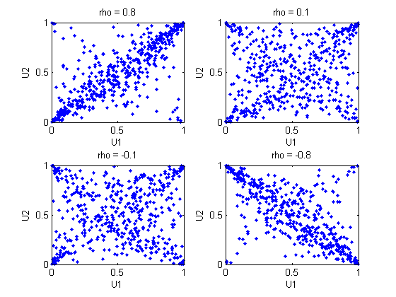
A t copula has uniform marginal distributions for U1 and U2, just as a Gaussian copula does. The rank correlation tau or rho_s between components in a t copula is also the same function of rho as for a Gaussian. However, as these plots demonstrate, a t(1) copula differs quite a bit from a Gaussian copula, even when their components have the same rank correlation. The difference is in their dependence structure. Not surprisingly, as the degrees of freedom parameter nu is made larger, a t(nu) copula approaches the corresponding Gaussian copula.
As with a Gaussian copula, any marginal distributions can be imposed over a t copula. For example, using a t copula with 1 degree of freedom, we can again generate random vectors from a bivariate distribution with Gam(2,1) and t(5) marginals:
subplot(1,1,1); n = 1000; rho = .7; nu = 1; T = mvtrnd([1 rho; rho 1], nu, n); U = tcdf(T,nu); X = [gaminv(U(:,1),2,1) tinv(U(:,2),5)]; [n1,ctr1] = hist(X(:,1),20); [n2,ctr2] = hist(X(:,2),20); subplot(2,2,2); plot(X(:,1),X(:,2),'.'); axis([0 15 -10 10]); h1 = gca; title('1000 Simulated Dependent t and Gamma Values'); xlabel('X1 ~ Gamma(2,1)'); ylabel('X2 ~ t(5)'); subplot(2,2,4); bar(ctr1,-n1,1); axis([0 15 -max(n1)*1.1 0]); axis('off'); h2 = gca; subplot(2,2,1); barh(ctr2,-n2,1); axis([-max(n2)*1.1 0 -10 10]); axis('off'); h3 = gca; set(h1,'Position',[0.35 0.35 0.55 0.55]); set(h2,'Position',[.35 .1 .55 .15]); set(h3,'Position',[.1 .35 .15 .55]); colormap([.8 .8 1]);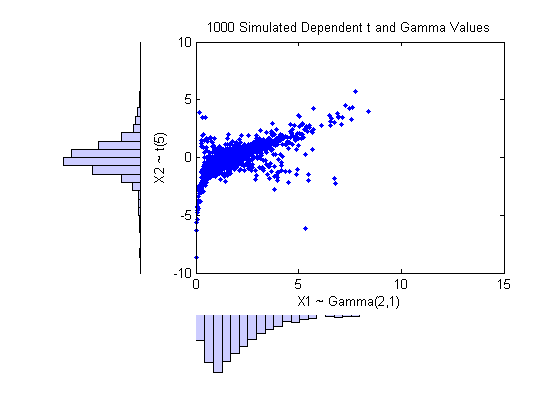
Compared to the bivariate Gamma/t distribution constructed earlier, which was based on a Gaussian copula, the distribution constructed here, based on a t(1) copula, has the same marginal distributions and the same rank correlation between variables, but a very different dependence structure. This illustrates the fact that multivariate distributions are not uniquely defined by their marginal distributions, or by their correlations. The choice of a particular copula in an application may be based on actual observed data, or different copulas may be used as a way of determining the sensitivity of simulation results to the input distribution.
The Gaussian and t copulas are known as elliptical copulas. It's easy to generalize elliptical copulas to a higher number of dimensions. For example, we can simulate data from a trivariate distribution with Gamma(2,1), Beta(2,2), and t(5) marginals using a Gaussian copula as follows.
subplot(1,1,1); n = 1000; Rho = [1 .4 .2; .4 1 -.8; .2 -.8 1]; Z = mvnrnd([0 0 0], Rho, n); U = normcdf(Z,0,1); X = [gaminv(U(:,1),2,1) betainv(U(:,2),2,2) tinv(U(:,3),5)]; plot3(X(:,1),X(:,2),X(:,3),'.'); grid on; view([-55, 15]); xlabel('U1'); ylabel('U2'); zlabel('U3');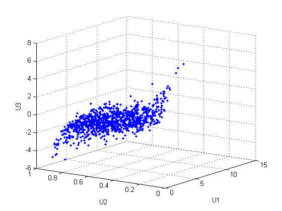
Notice that the relationship between the linear correlation parameter rho and, for example, Kendall's tau, holds for each entry in the correlation matrix Rho used here. We can verify that the sample rank correlations of the data are approximately equal to the theoretical values.
tauTheoretical = 2.*asin(Rho)./pi
tauTheoretical =
1.0000 0.2620 0.1282
0.2620 1.0000 -0.5903
0.1282 -0.5903 1.0000
tauSample = corr(X, 'type','Kendall')
tauSample =
1.0000 0.2640 0.1254
0.2640 1.0000 -0.5910
0.1254 -0.5910 1.0000
To simulate dependent multivariate data using a copula, we have seen that we need to specify
1) the copula family (and any shape parameters), 2) the rank correlations among variables, and 3) the marginal distributions for each variable
Suppose we have two sets of stock return data, and we would like to run a Monte Carlo simulation with inputs that follow the same distributions as our data.
load stockreturns nobs = size(stocks,1); subplot(2,1,1); hist(stocks(:,1),10); xlabel('X1'); ylabel('Frequency'); subplot(2,1,2); hist(stocks(:,2),10); xlabel('X2'); ylabel('Frequency');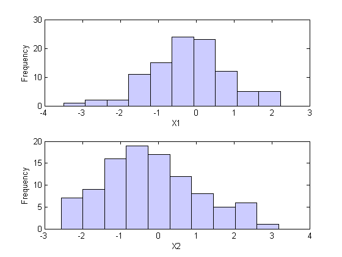
(These two data vectors have the same length, but that is not crucial.)
We could fit a parametric model separately to each dataset, and use those estimates as our marginal distributions. However, a parametric model may not be sufficiently flexible. Instead, we can use an empirical model for the marginal distributions. We only need a way to compute the inverse CDF.
The empirical inverse CDF for these datasets is just a stair function, with steps at the values 1/nobs, 2/nobs, ... 1. The step heights are simply the sorted data.
invCDF1 = sort(stocks(:,1)); n1 = length(stocks(:,1)); invCDF2 = sort(stocks(:,2)); n2 = length(stocks(:,2)); subplot(1,1,1); stairs((1:nobs)/nobs, invCDF2);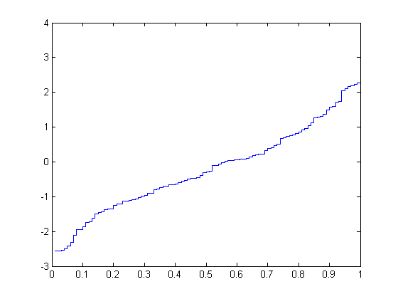
For the simulation, we might want to experiment with different copulas and correlations. Here, we'll use a bivariate t(2) copula with a fairly large negative correlation parameter.
n = 1000; rho = -.8; nu = 5; T = mvtrnd([1 rho; rho 1], nu, n); U = tcdf(T,nu); X = [invCDF1(ceil(n1*U(:,1))) invCDF2(ceil(n2*U(:,2)))]; [n1,ctr1] = hist(X(:,1),10); [n2,ctr2] = hist(X(:,2),10); subplot(2,2,2); plot(X(:,1),X(:,2),'.'); axis([-3.5 3.5 -3.5 3.5]); h1 = gca; title('1000 Simulated Dependent Values'); xlabel('X1'); ylabel('X2'); subplot(2,2,4); bar(ctr1,-n1,1); axis([-3.5 3.5 -max(n1)*1.1 0]); axis('off'); h2 = gca; subplot(2,2,1); barh(ctr2,-n2,1); axis([-max(n2)*1.1 0 -3.5 3.5]); axis('off'); h3 = gca; set(h1,'Position',[0.35 0.35 0.55 0.55]); set(h2,'Position',[.35 .1 .55 .15]); set(h3,'Position',[.1 .35 .15 .55]); colormap([.8 .8 1]);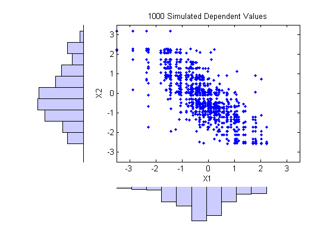
The marginal histograms of the simulated data closely match those of the original data, and would become identical as we simulate more pairs of values. Notice that the values are drawn from the original data, and because there are only 100 observations in each dataset, the simulated data are somewhat "discrete". One way to to overcome this would be to add a small amount of random variation, possibly normally distributed, to the final simulated values. This is equivalent to using a smoothed version of the empirical inverse CDF.